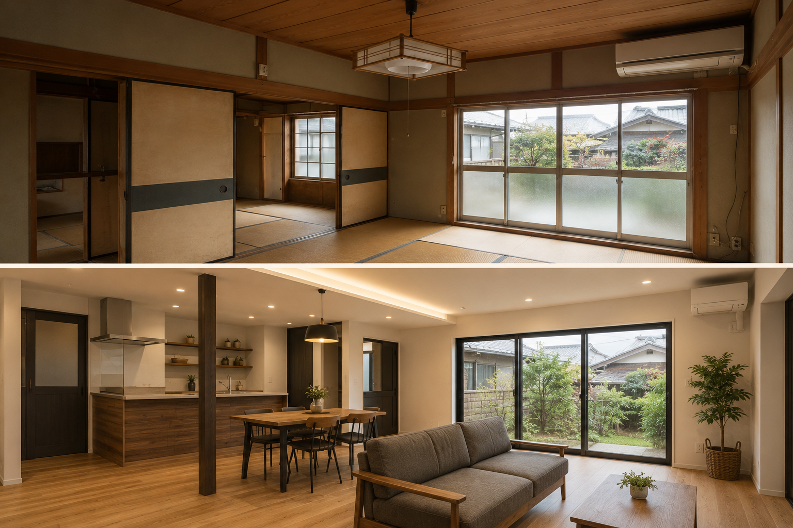
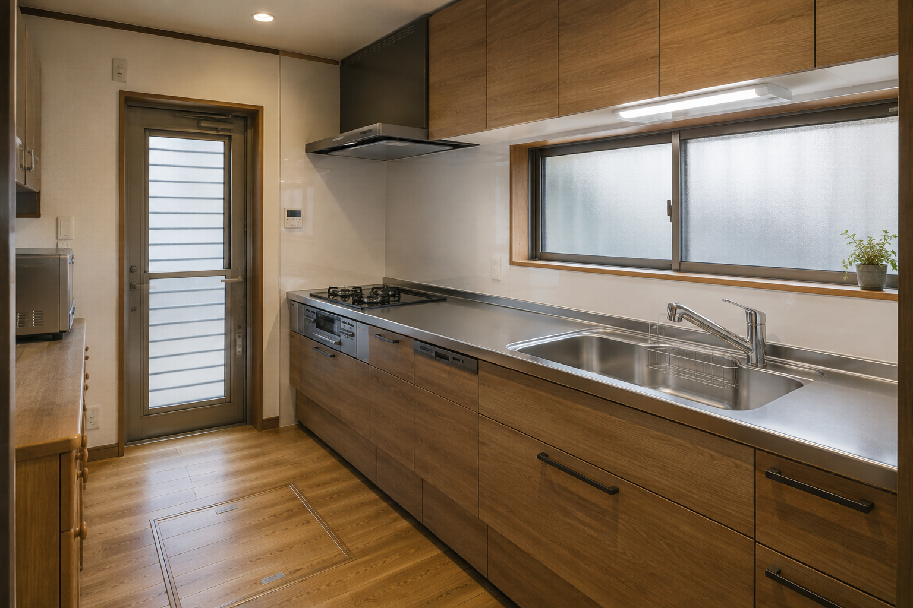
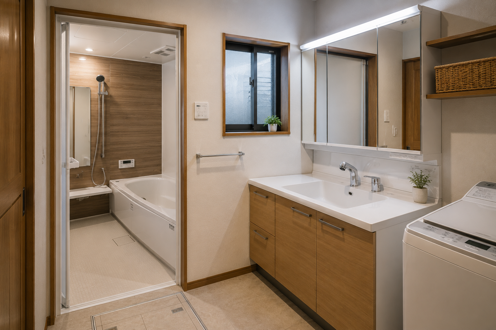
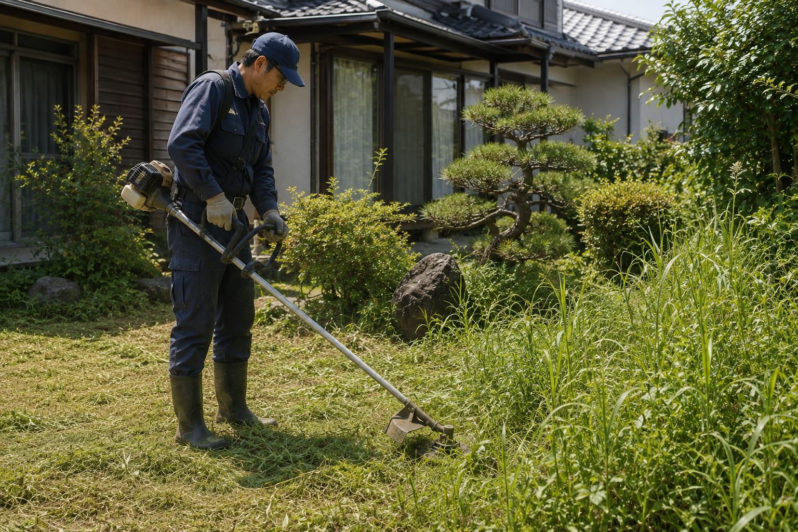
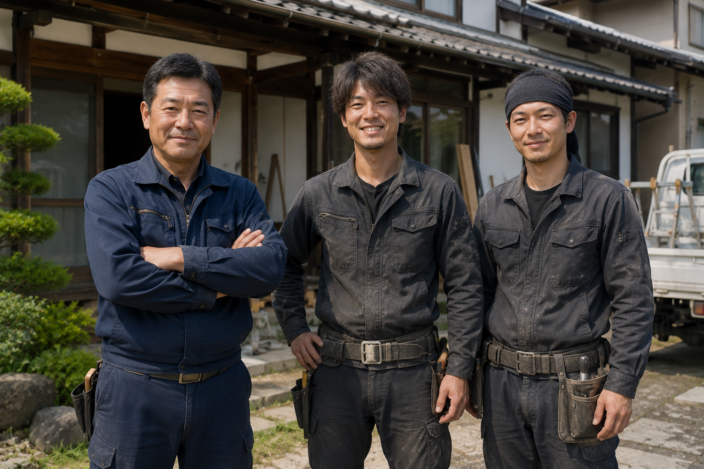

Before After施工事例 01
和室中心の住まいを、明るいLDKへ
築年数の経った住宅の居間・和室を一体化し、 家族が集まりやすい明るいLDKへ改修。

SERVICE
間取り変更、内装、水回りなど。
外壁、屋根、雨どい、建具など。
草刈り、剪定、片付けなど。
除雪、雪下ろし、冬支度など。
ABOUT
家は、長く住むほど少しずつ手が必要になります。
大きな工事だけではなく、
雨どいの修理、建具の調整、草刈り、冬の除雪まで。
深雪工務店では、地域で暮らすうえで必要になる仕事を、
ひとつひとつ丁寧にお引き受けしています。
「こんなこと頼んでいいのかな」と迷うようなことでも、
まずはお気軽にご相談ください。
WORKS

Before After施工事例 01
築年数の経った住宅の居間・和室を一体化し、 家族が集まりやすい明るいLDKへ改修。

施工事例 02
収納や作業動線を見直し、毎日の家事がしやすいキッチンへ。

施工事例 03
寒さや使いにくさを改善し、清掃性と使いやすさを重視した水回りへ。
SMALL JOBS
「これくらいの内容で頼んでいいのか分からない」——
そんな小さな修繕も、私たちにとって大切な仕事のひとつです。
GARDEN / SNOW
上越・妙高エリアの暮らしでは、庭仕事も冬の雪かきも欠かせません。 深雪工務店では、住まいの修繕と同じ体制で、庭と雪の仕事にも力を入れています。

草刈り、簡単な剪定、庭まわりの片付けなど、 住宅の外まわりの仕事も承ります。
玄関・駐車場まわりの除雪、 雪下ろし、冬前の点検などにも対応します。
STAFF

代表 / 職人
地域で住まいの仕事に携わって30年。 大きな工事も、小さな修繕も、変わらず丁寧に対応します。
職人
内装・木工・住宅修繕を中心に担当。 細かな仕事も柔軟に対応します。
職人
外まわりの修繕や庭仕事、除雪などを担当。 安全第一で丁寧に作業します。
AREA
周辺地域についてもご相談いただけます。
地域密着だからこそ、すぐ動ける距離を大切にしています。
会社概要
CONTACT
修理ひとつから、リフォーム、草刈り、除雪まで。
「こんなこと頼める？」という内容でもお気軽にご相談ください。